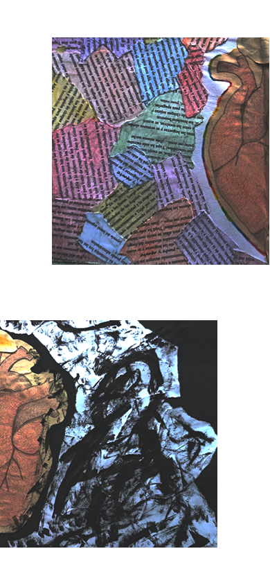

Libro Objeto Digital de la Unidad Pedagógica del primer año del
Profesorade de Educación Primaria del Instituto ENOVA - Extensión
Larroque
Este libro no fue hecho por una sola mano. Nació de múltiples
gestos, texturas y voces, reunidos en un espacio nuevo: un
libro-objeto digital. Cada fragmento que verás aquí habitó antes
otro cuerpo, otra obra. Ahora se entrelazan, formando una trama
colectiva que habita en la pantalla.
"Primer grado llegó... Pupitres bajitos, una seño de grito fácil y
muchos aprendizajes nuevos"
"‘El aula de la escalerita’, según mi apreciación de aquel entonces
y de ahora también, es el más lindo de toda la escuela 66"
"La seño nos enseñaba a compartir, jugar, cantar y bailar. Son
momentos que quedaron para siempre en mi corazón."
"La primaria fue una etapa de constante aprendizaje; aprendí el
abecedario, las cuentas, las tablas, a leer oraciones y tantas cosas
más."
Las autobiografías son espejos o ventanas que nos permiten observar,
conocer, entender la vida de una persona, pero también acercarnos a su mundo
interior. A través de sus palabras, podemos descubrir sus
pensamientos, emociones y experiencias significativas. Nos invitan a
reflexionar sobre nuestra propia vida y a encontrar conexiones con
las historias de otros.

"La seño nos enseñaba jugando, pero para mí eran solo juegos, no
sabía que ya estaba aprendiendo."
"Algo cambió... ya no habían juegos, ya no habían risas, ya no
habían colores, todo se puso blanco y negro"
"Donde todo comenzó con juegos y sonrisas, descubrí la magia de
aprender."
"Cada paso, desde el jardín hasta hoy, fue un ladrillo en el camino
de mis sueños."
Este libro no fue hecho por una sola mano. Nació de múltiples
gestos, texturas y voces, reunidos en un espacio nuevo: un
libro-objeto digital. Cada fragmento que verás aquí habitó antes
otro cuerpo, otra obra. Ahora se entrelazan, formando una trama
colectiva que habita en la pantalla.
Estos fragmentos fueron posibles gracias a cada uno de quienes dieron
vida a sus libros: